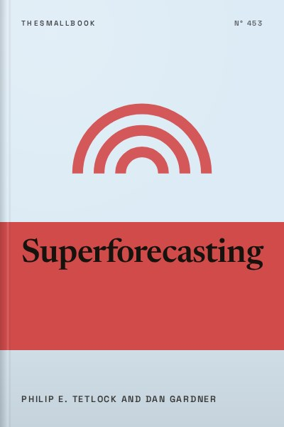

Library › Psychology & People
Superforecasting - Summary & Key Lessons

The art and science of prediction. Ordinary people who think in probabilities beat experts and intelligence analysts.
📖 OPEN THE FULL INTERACTIVE BREAKDOWN →🌐 Read it in Hindi, Hinglish, Gujarati, Tamil & 22 more languages, with audio.
💡 The Big Idea
Philip Tetlock spent decades studying expert predictions and found that many experts did little better than chance. But in a large forecasting tournament funded by a US intelligence research agency, his Good Judgment Project discovered a group of ordinary people, retired workers, students, engineers, who consistently made remarkably accurate predictions about world events. Tetlock called them superforecasters. They were not geniuses or insiders. They succeeded because of how they thought: open-minded, numerate, humble, curious and willing to update beliefs with new information. The book explains their methods, including breaking big questions into smaller ones, starting with base rates, thinking in fine-grained probabilities and keeping score, and shows that good judgment can be learned.
🧠 The 10 Key Lessons
Lesson 1: Most Experts Are Barely Better Than Chance
Chapter 1: An Optimistic Skeptic
Tetlock's earlier research tracked thousands of predictions from experts on politics and economics over many years. The average expert performed only slightly better than random guessing, which he memorably compared to a dart-throwing chimpanzee. Experts who were famous and confident, the ones on television, were often worse. The problem is not that prediction is impossible, but that pundits are rarely measured. They make vague claims, never keep score and are rewarded for confidence rather than accuracy. Tetlock remains an optimistic sceptic: some things are predictable over short horizons, and accuracy can improve if we measure it.
📖 Example: Tetlock's long study, published as Expert Political Judgment in 2005, found that specialists who knew a lot about a region were often no better at predicting its future than well-informed generalists. Those who confidently explained everything through one big theory performed worst. Read the full example →
⚡ Do this: Think of one prediction you have heard from a confident commentator. Check whether it came true, and note whether anyone held them accountable.
Lesson 2: Superforecasters Exist, and They Are Ordinary People
Chapter 4: Superforecasters
In the forecasting tournament run by IARPA, the US intelligence research agency, teams competed to predict hundreds of real-world questions, such as whether a country would hold an election or a currency would fall. Tetlock's Good Judgment Project recruited thousands of volunteers. The top two percent, the superforecasters, beat other teams by wide margins and reportedly outperformed intelligence analysts with access to classified information. They came from many backgrounds. What set them apart was not credentials but habits of mind.
📖 Example: One superforecaster featured in the book is Bill Flack, a retired US Department of Agriculture employee who forecast from home in Nebraska. With no special access, his careful, frequent updating made him one of the most accurate forecasters in the tournament. Read the full example →
⚡ Do this: Join or follow an open forecasting platform, or simply start a personal log of predictions with dates and probabilities.
Lesson 3: Break Big Questions Into Smaller Ones
Chapter 5: Supersmart?
Superforecasters use a technique named after physicist Enrico Fermi: breaking a seemingly impossible question into smaller, answerable parts. Instead of guessing wildly, they estimate each component and combine them. This exposes assumptions, reduces bias and produces better estimates. Fermi estimation works for everything from business planning to personal decisions.
📖 Example: Fermi famously asked students to estimate the number of piano tuners in Chicago. By estimating the population, households with pianos, how often pianos are tuned and how many a tuner can service, students reached a reasonable answer without data. Read the full example →
⚡ Do this: Estimate something you do not know, such as how many chai stalls are in your city, by breaking it into smaller estimates. Write each step.
Lesson 4: Start With the Outside View
Chapter 5: The Outside View
When predicting an event, superforecasters begin with the outside view: the base rate, how often similar events have happened before. Only then do they adjust using specifics of the case, the inside view. Most people start with the details and ignore base rates, which leads to overconfidence.
📖 Example: If asked whether a particular couple will divorce, the outside view starts with divorce rates for similar couples. Then you adjust for specifics, such as how long they have been married. Starting with personal impressions alone leads to poor predictions. Read the full example →
⚡ Do this: For a project you are planning, look up how long similar projects usually take. Use that as your starting estimate before adding details.
Lesson 5: Think in Fine-Grained Probabilities
Chapter 6: Superquants?
Superforecasters do not just say 'likely' or 'unlikely.' They use precise numbers, such as 63 percent rather than 60 percent. Research showed that rounding their forecasts reduced accuracy, meaning the fine distinctions carried real information. Thinking in probabilities helps avoid all-or-nothing thinking and allows better updating.
📖 Example: When estimating whether an event would occur, superforecasters often adjusted their probabilities by small amounts as new information arrived, rather than flipping between yes and no. Read the full example →
⚡ Do this: For your next prediction, write a specific percentage instead of words like 'probably.' Revisit it when new information appears.
Lesson 6: Update Often, in Small Steps
Chapter 7: Supernewsjunkies?
Superforecasters update their forecasts frequently as new information arrives, usually in small increments. They avoid two errors: under-reacting (ignoring new evidence) and over-reacting (changing too much based on noise). This balanced updating, similar to Bayesian reasoning, is a key reason for their accuracy.
📖 Example: Tetlock found that superforecasters updated their predictions more often than regular forecasters, but each update was modest, reflecting careful weighing of evidence. Read the full example →
⚡ Do this: Keep a prediction journal. Each week, review one forecast and adjust it slightly based on new information.
Lesson 7: Perpetual Beta: A Growth Mindset for Judgment
Chapter 8: Perpetual Beta
Superforecasters treat their beliefs as hypotheses, always open to revision. They review mistakes, analyse what went wrong and adjust methods. Tetlock calls this 'perpetual beta,' a state of constant improvement. This growth mindset distinguishes them from experts who defend past predictions.
📖 Example: After each tournament round, superforecasters reviewed their forecasts, discussing what they got right and wrong, and adjusted their approaches. Read the full example →
⚡ Do this: After any decision or prediction, write a short review: what you expected, what happened and what you will do differently.
Lesson 8: Teams Can Beat Individuals
Chapter 9: Superteams
When superforecasters worked in teams, their accuracy improved further. Good teams shared information, challenged each other respectfully and avoided groupthink. Diversity of perspectives helped. Tetlock emphasises that team culture matters: members must feel safe disagreeing.
📖 Example: Superforecaster teams in the tournament outperformed individuals, partly because members questioned each other's assumptions and shared research. Read the full example →
⚡ Do this: Before an important decision, ask two people with different perspectives to challenge your reasoning.
Lesson 9: Leaders Need Humility and Decisiveness
Chapter 10: The Leader's Dilemma
Leaders face a dilemma: they must act decisively but also remain open to new information. Tetlock draws on military ideas such as mission command, where leaders set clear goals but allow subordinates flexibility. Good leaders combine confidence in action with humility in thinking.
📖 Example: The German army's concept of Auftragstaktik gave officers clear objectives but freedom to adapt. Tetlock uses it to show how organisations can combine decisiveness with adaptability. Read the full example →
⚡ Do this: If you lead a group, explain the goal of a task clearly but let team members decide how to achieve it.
Lesson 10: Keep Score: Measure Forecasts
Chapter 11 and Epilogue
Tetlock argues that forecasting can only improve if predictions are measured. He uses the Brier score, which measures the accuracy of probabilistic forecasts. Without scoring, people cannot learn from mistakes. He calls for organisations, governments and media to track forecasts so that accuracy, not confidence, is rewarded.
📖 Example: Weather forecasters are measured constantly, which is one reason weather forecasts have become more accurate over decades. Read the full example →
⚡ Do this: Start tracking your predictions with a simple score: note whether each came true and compare with your stated probability.
✅ 5-Step Action Plan
- Start a prediction journal with dates and percentages.
- Use Fermi estimation on one unknown number this week.
- Look up the base rate before every big estimate.
- Update forecasts in small steps as news arrives.
- Review one past decision every week to learn from it.
⚠️ When This Doesn't Work
Superforecasters excel at short-term, well-defined questions, usually within a year. Long-term, unprecedented events, the kind Nassim Taleb calls black swans, remain hard to predict. Forecasting skill also requires time and practice. Use these methods to improve judgment, but stay humble about the unpredictable.
💀 The Graveyard Proves It
💬 Best Quotes from Superforecasting
- “Beliefs are hypotheses to be tested, not treasures to be guarded.”
- “Foresight is not a mysterious gift bestowed at birth. It is the product of particular ways of thinking.”
- “The average expert was roughly as accurate as a dart-throwing chimpanzee.”
Interactive version: mark lessons as read, listen in your language, share quote cards.